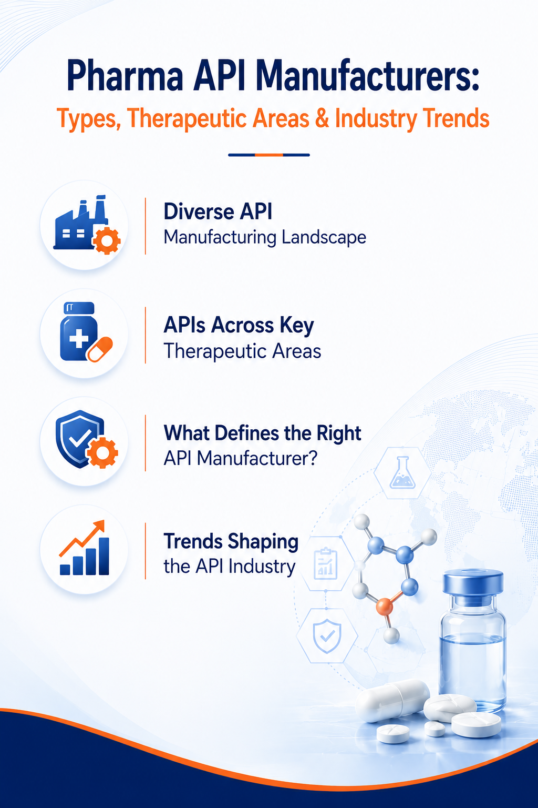

Pharma API Manufacturers: Types, Therapeutic Areas & Industry Trends
10 August 2026

The pharmaceutical industry relies on Active Pharmaceutical Ingredients (APIs) as the components responsible for the pharmacological activity of medicines. API manufacturers produce a wide range of pharmaceutical ingredients used across generic drugs, branded medicines, specialty pharmaceuticals, and other drug products.
The API landscape includes small-molecule APIs, highly potent APIs (HPAPIs), peptide APIs, steroidal APIs, and other specialized API categories. These ingredients can differ in their molecular structures, physicochemical properties and manufacturing processes.
The global API manufacturer landscape is diverse. Manufacturers may differ in their API portfolios, production capabilities, manufacturing scale, quality systems, regulatory status, geographic presence, and target markets. For pharmaceutical companies, selecting an appropriate API manufacturer can depend on the specific API, required specifications, intended therapeutic area, target market, supply requirements, and regulatory considerations.
Pharma APIs and Their Role in Drug Manufacturing
APIs are incorporated into pharmaceutical formulations such as oral solids, oral liquids, topical preparations, injectables, and other dosage forms. The selection of an API depends on the therapeutic purpose, formulation, route of administration, required strength, and other product-specific considerations.
An API may be available from multiple manufacturers, while the same manufacturer may produce APIs across several therapeutic categories and dosage forms.
API Types Receiving Industry Attention
Small-Molecule APIs
Small-molecule APIs could continue to represent an important category within pharmaceutical development. They may be used across therapeutic areas including cardiovascular, central nervous system (CNS), anti-infective, gastrointestinal, metabolic, and other pharmaceutical applications.
Small-molecule APIs can differ considerably in their chemical structures, synthesis routes, physicochemical properties, and manufacturing requirements, which could influence the analytical, manufacturing, and quality considerations associated with individual products.
Highly Potent APIs (HPAPIs)
Highly potent APIs may receive attention in pharmaceutical development because relatively small quantities can produce significant pharmacological effects.
HPAPIs could be relevant to areas such as oncology and other specialized therapeutic applications. Depending on the characteristics of the compound, their handling and manufacture may require considerations related to containment, occupational exposure controls, specialized equipment, and facility controls.
Peptide APIs
Peptide APIs could represent an area of interest within the development of certain pharmaceutical products. They consist of chains of amino acids and can have manufacturing, purification, characterization, and analytical requirements that differ from those of conventional small-molecule APIs.
Depending on the specific peptide, potential therapeutic areas may include metabolic disorders, endocrine conditions, and other applications.
Steroidal APIs
Steroidal APIs could continue to be relevant to pharmaceutical products across selected therapeutic areas. They are based on steroid structures and may be associated with applications including hormonal therapies, corticosteroid treatments, reproductive health, and other therapeutic areas.
Their chemical structures and physicochemical properties can result in specific considerations for synthesis, purification, characterization, and quality control.
Complex and Specialized APIs
Complex and specialized APIs could attract attention as pharmaceutical development encompasses a broader range of molecular structures and therapeutic approaches.
Depending on the molecule, these APIs may require particular approaches to purification, characterization, handling, analytical testing, or quality assessment. The specific requirements can vary according to the molecular structure, potency, physicochemical properties, dosage form, and intended pharmaceutical use.
Therapeutic Areas Associated with APIs
Pharma APIs can be associated with a broad range of therapeutic areas, including cardiovascular, central nervous system (CNS), anti-infective, oncology, metabolic, endocrine, and gastrointestinal medicines. The therapeutic relevance of an API depends on its pharmacological properties and intended pharmaceutical use.
Factors to Consider When Selecting a API Manufacturer
Selecting an API manufacturer generally involves both technical and commercial evaluation. Depending on the project, pharmaceutical companies could consider the manufacturer's API portfolio, product specifications, manufacturing scale, quality systems, regulatory documentation, production capacity, supply continuity, and target-market requirements.
For buyers, technical documentation can be particularly relevant when evaluating an API. Depending on the product and market, this may include specifications, analytical methods, certificates of analysis, stability information, safety data, and regulatory documentation, where applicable.
Other considerations may include minimum order quantities, lead times, packaging, storage requirements, geographic location, and commercial terms.
API Quality and Regulatory Considerations
API quality is an important consideration because the active ingredient forms a fundamental component of the finished pharmaceutical product.Manufacturers may operate under applicable Good Manufacturing Practice (GMP) requirements, while regulatory expectations can vary according to the intended market and API.
Depending on the jurisdiction and product, regulatory documentation may include information such as Drug Master Files (DMFs), Certificates of Suitability (CEPs), certificates, and inspection-related documentation, where applicable.
Trends Influencing the Pharma API Industry
Growing Demand for Generic APIs
Generic medicines account for a significant share of pharmaceutical products in many markets. Demand for APIs used in generic formulations can therefore be influenced by generic drug launches, market competition, healthcare access, and pharmaceutical manufacturing requirements.
Increasing Interest in Complex APIs
The pharmaceutical pipeline includes increasingly complex molecules and specialized therapeutic products. This can increase attention toward APIs such as peptides, HPAPIs, and other complex or specialized APIs.
Supply Chain Diversification
The global API supply chain involves manufacturers, raw-material suppliers, distributors, and pharmaceutical companies across different regions. Pharmaceutical companies may therefore consider supplier diversification, manufacturing locations, supply continuity, production capacity, and sourcing strategies when evaluating API suppliers.
Sustainability in API Manufacturing
Environmental considerations are receiving attention across pharmaceutical manufacturing, including API production. Manufacturers may explore approaches related to solvent use, waste reduction, energy consumption, process efficiency, and resource utilization, although the specific practices vary between manufacturers and manufacturing processes.
Increasing Importance of API Quality and Documentation
As pharmaceutical companies source APIs across different markets, quality documentation, specifications, regulatory information, and supply-chain transparency can become important considerations in supplier evaluation.The documentation required can vary according to the API, pharmaceutical product, and intended market.
The Role of Innovation in the Pharma API Industry
Innovation in the API industry can involve developments in molecule synthesis, purification, crystallization, analytical technologies, manufacturing equipment, and quality control. For API manufacturers, continued development of their product portfolios and manufacturing capabilities can help address changing requirements across pharmaceutical applications.
As pharmaceutical development evolves, API manufacturers may increasingly work across different molecular types, therapeutic areas, production scales, and market requirements, contributing to a diverse and evolving API supply landscape.
Strengthening Digital Visibility with Pharma Content Solutions
Pharma Content Solutions helps API manufacturers build stronger digital visibility by creating SEO-optimized, API-focused content that highlights their products, therapeutic categories, technical information and manufacturing expertise.
Through SEO content, API product pages, technical articles, application-focused content, and digital marketing solutions, Pharma Content Solutions helps API manufacturers reach relevant B2B audiences and improve their visibility when pharmaceutical companies are researching API suppliers and products.
Let us take care of the content that powers your digital presence, so you can focus on your business.